마케팅 스킬 묶음은 어떻게 생겼나요
스킬을 만든 사람은 Corey Haines예요. 발표자는 해외에서 전환율 최적화 마케팅 에이전시를 운영하는, 생각보다 꽤 유명한 사람이라고 소개해요. 이 사람이 자기 마케팅 노하우를 통째로 AI(Artificial Intelligence) 에이전트가 쓸 수 있는 스킬로 정리해 GitHub 레포 coreyhaines31/marketingskills에 공개해 뒀어요.
레포 README에 스킬들이 어떻게 함께 일하는지 보여 주는 그림이 있어요. 맨 위 상자가 product-marketing-context이고, 괄호 안에 '다른 모든 스킬이 먼저 읽는다'고 적혀 있어요. 그 아래로 일곱 갈래가 갈라져요. SEO(Search Engine Optimization) & Content, CRO(Conversion Rate Optimization), Content & Copy, Paid & Measurement, Growth & Retention, Sales & GTM(Go-To-Market), Strategy이고, 갈래마다 스킬 이름이 세로로 나열돼 있어요.

구조에서 눈여겨볼 점은 두 가지예요. 하나는 모든 스킬이 '내 제품과 고객이 누구인지'를 담은 맥락 문서부터 확인한다는 것이에요. 다른 하나는 스킬이 따로 놀지 않고 서로를 참조한다는 것이에요. 발표자는 직접 써 보니 꽤 유용했고, Alex Hormozi의 마케팅 이론과 비슷한 느낌을 받았다고 해요. 요즘 자기 마케팅 전략을 짤 때 이 스킬을 많이 쓴다고 해요.
어떤 스킬이 들어 있나요
README 아래쪽에는 스킬 목록 표가 있어요. 왼쪽 칸이 스킬 이름, 오른쪽 칸이 '사용자가 이런 걸 원할 때 쓴다'는 설명이에요. 영상은 목록을 내려가며 눈에 띄는 줄을 확대해 보여 줘요. 아래 화면에서 확대된 두 줄은 page-cro(홈페이지·랜딩 페이지 같은 마케팅 페이지의 전환을 높일 때)와 referral-program(레퍼럴·제휴·입소문 프로그램을 만들 때)이에요.
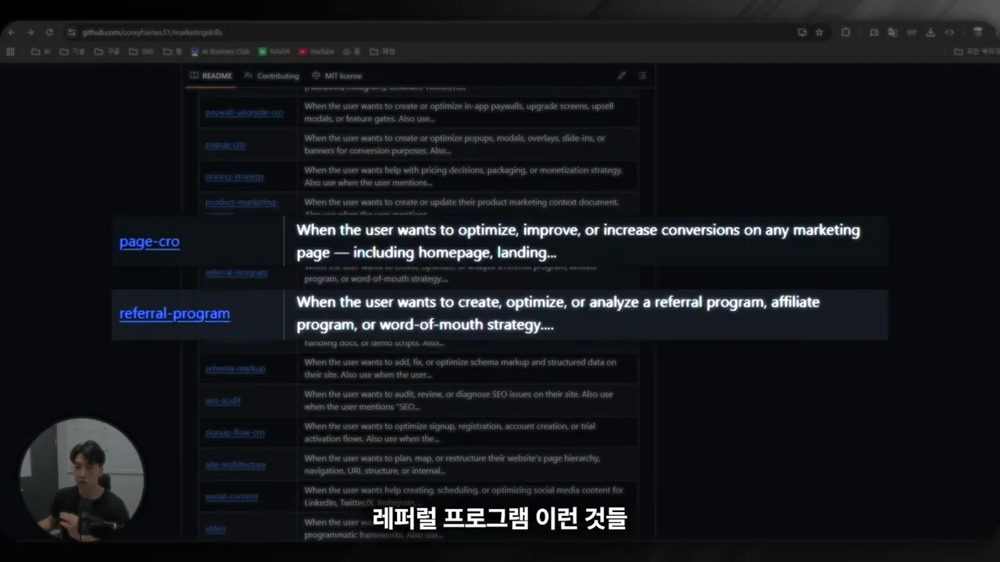
발표자가 훑어 준 스킬은 이런 것들이에요. A/B 테스트, 광고 크리에이티브, AI 검색 최적화, 분석 트래킹, 앱스토어 최적화 점검, 콜드 메일, 콘텐츠 전략, 카피라이팅, 카피 편집, 고객 조사, 이메일 시퀀스, 폼 CRO, 페이지 CRO, 레퍼럴 프로그램이 있어요. 그중 자주 쓰는 건 콘텐츠 전략, 카피라이팅, 리드 마그넷, 폼 CRO 네 개라고 해요. 아직 다 열어 보진 못했고 하나씩 써 보는 중이래요.
영상의 나머지는 두 가지를 보여 줘요. 이 스킬을 Claude 채팅에서 쓰는 법, 그리고 Claude Code로 이 스킬을 쓰는 에이전트를 만드는 법이에요.
Claude 채팅에 스킬 넣기
Claude 채팅에서 쓰려면 스킬을 먼저 넣어 줘야 해요. 발표자가 따라 한 순서는 이래요.
- 왼쪽 아래 계정 메뉴에서 설정으로 들어가요
- 설정 → 기능에서 아래로 내려 '스킬' 칸을 찾아요 — '사용자 지정으로 이동' 버튼을 눌러요. 사용자 지정 → 스킬 화면이 열려요
- GitHub 레포에서 원하는 스킬 폴더를 열고
SKILL.md를 받아요 — 파일 화면 오른쪽 위 다운로드 버튼이에요. - 사용자 지정 → 스킬에서
+→ 스킬 만들기 → 스킬 업로드 — 받은SKILL.md를 끌어다 놓아요.
설정의 '기능' 화면 맨 아래에 스킬 칸이 있어요. 여기엔 스킬이 사용자 지정으로 옮겨졌다는 안내와 '사용자 지정으로 이동' 버튼만 있어요. 그 위에 있는 '코드 실행 및 파일 생성' 설명에 '스킬 사용에 필요합니다'라고 적혀 있다는 점도 함께 봐 두면 좋아요.
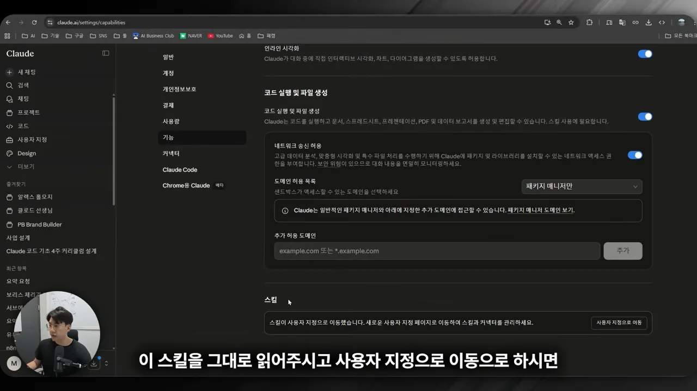
사용자 지정 → 스킬 화면 왼쪽에 '개인 스킬' 목록이 있어요. 발표자는 marketing-psychology, lead-magnets, copywriting, form-cro, page-cro, content-strategy를 이미 넣어 뒀어요. 오른쪽에는 고른 스킬의 설명과 트리거('슬래시 명령어 + 자동'), 본문이 보여요. 본문에 'Check for product marketing context first'라는 줄이 있는데, 앞에서 본 '맥락 문서부터 읽는다'는 규칙이 바로 이거예요.
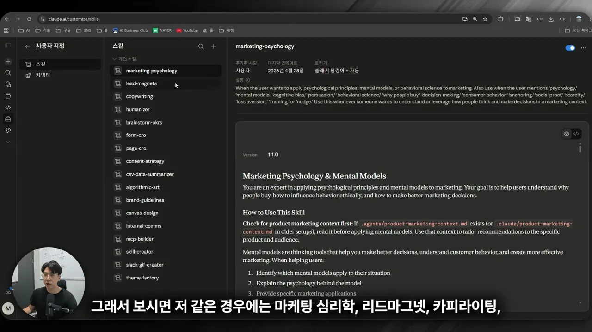
스킬 파일은 레포의 skills/<스킬 이름>/SKILL.md에 있어요. 아래는 content-strategy의 SKILL.md예요. 위쪽 표에 name과 description, version이 있고, 툴바 오른쪽에 Raw와 다운로드 아이콘이 있어요.
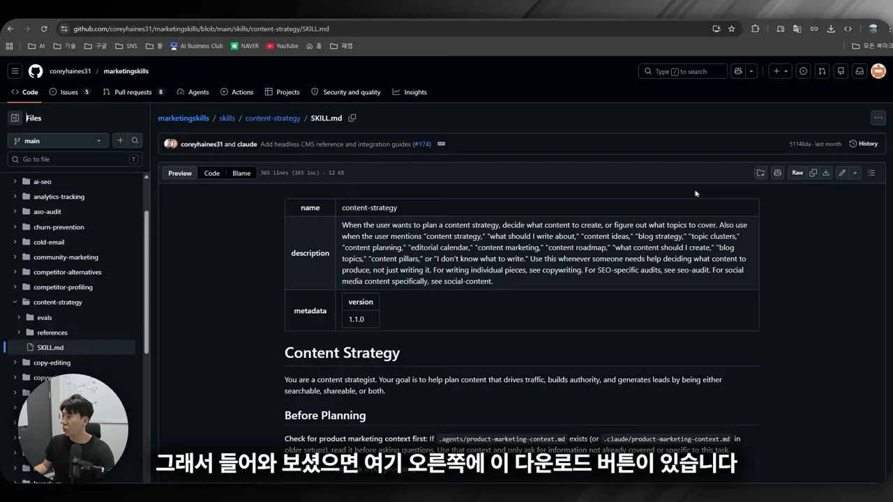
받은 파일은 '스킬 업로드' 창에 끌어다 놓아요. 창 아래 파일 요구사항이 두 줄 있어요. .md 파일이면 맨 위 머리말(frontmatter)에 이름과 설명이 있어야 하고, .zip이나 .skill 파일이면 안에 SKILL.md가 있어야 해요. 오른쪽 위엔 방금 받은 SKILL (5).md 같은 다운로드 기록이 보여요.
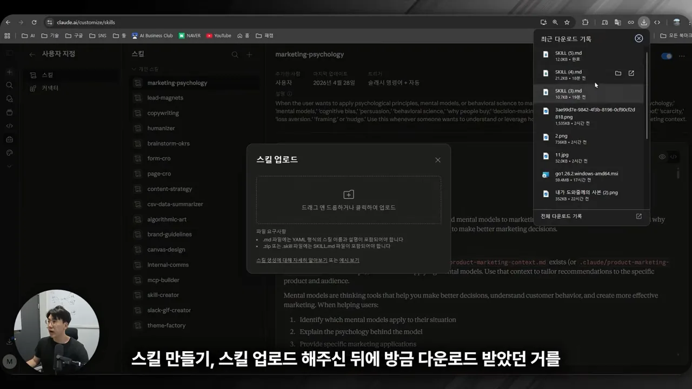
SKILL (5).md처럼 바뀌어도 괜찮아요. 이름과 설명은 파일 맨 위 머리말에서 읽어요.
영상 03:50에서 보기
콘텐츠 전략 스킬: 맥락을 주면 답이 달라져요
스킬을 넣었으면 쓰는 법은 단순해요. 입력창에서 /를 누르면 내 스킬 목록이 뜨고, 그중 하나를 골라 질문을 이어 쓰면 돼요. 발표자는 콘텐츠를 만들다 막혔을 때 이렇게 슬래시 커맨드를 켜고 물어보면 된다고 해요.
아래 화면 입력창 맨 앞의 파란 글씨 /content-strategy가 고른 스킬이에요. 뒤에 '나는 지금 클로드 코드 관련 콘텐츠를 올리고 있는데…'로 시작하는 질문이 이어져요. 전체 질문은 '어떤 전략으로 넓힐 수 있을지 이 스킬로 제안해 줘'예요.
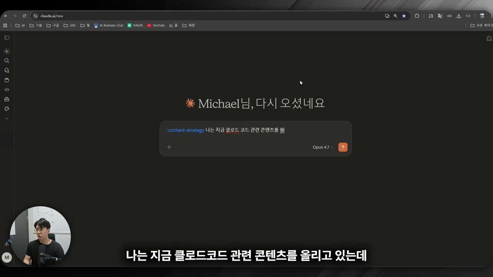
Claude가 먼저 맥락을 물어요
Claude는 스킬을 읽은 뒤 바로 답하지 않고, 맥락이 더 필요하다고 해요. 발표자는 맥락 문서도 메모리도 따로 만들어 두지 않았거든요. 그래서 질문 네 개를 던지고, 답을 듣기 전에 '가설 기반 전략 초안'을 먼저 보여 줘요.
아래 화면 위쪽 문장이 스킬의 핵심 원칙이에요. '모든 콘텐츠는 검색 가능하거나, 공유 가능하거나, 둘 다여야 해'요. 이어서 지금 하는 인스타 카드뉴스는 거의 100% Shareable 쪽이라, 검색으로 쌓이는 자산이 없다고 짚어요. 가운데 '가설' 칸에는 목표, ICP(비개발자·주니어 마케터·사장님), 채널(YouTube 검색, Instagram 공유, 뉴스레터 전환)이 정리돼 있어요. 맨 아래부터는 'Content Pillars 4개' 표, 즉 콘텐츠 필러 네 개를 정리한 표가 시작돼요.
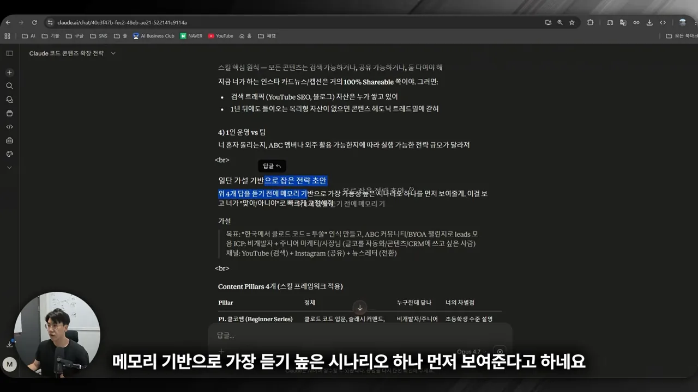
발표자는 질문에 답했어요. 포지셔닝은 '한국 클로드 코드 1인자', 메인 ICP는 1인 크리에이터, 가장 약한 점은 '차별화된 시그니처 콘텐츠'라고요. 발표자 말대로 이건 Claude에게 내 맥락을 주는 과정이에요. 맥락이 있어야 스킬을 더 잘 쓸 수 있어요.
맥락을 받은 뒤의 답
답이 훨씬 구체적으로 바뀌어요. 콘텐츠 비중을 유튜브 롱폼 쪽에 크게 두라고 나누고, 시그니처 콘텐츠를 만드는 법(이름 붙이기, 프레임워크, 반복)을 제안해요. '암묵지를 명시지로 바꿔 플레이북으로 만든다' 같은 주제도 뽑아 줘요.
아래는 그중 '시그니처 콘텐츠 시리즈 설계 (P1 - 40%)' 표예요. 표 위 문장이 핵심이에요. '이 한 프레임워크에서 최소 30개 콘텐츠가 나와. 같은 메시지를 다른 각도로 반복하는 게 핵심'. 표의 열은 형식, 제목 예시, 채널, 역할이에요. YouTube 롱폼은 '시그니처 정의', 뉴스레터는 '도발적 진입', Threads는 '반복 노출', 인스타 카드뉴스는 '공유 트리거'를 맡아요.
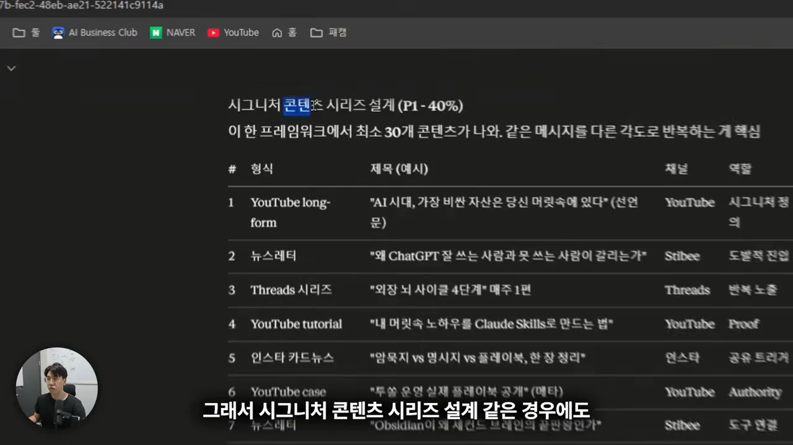
카피라이팅 스킬: 진단하고 고쳐 써요
이번엔 /copywriting을 불렀어요. 바로 일을 시키지 않고 먼저 '이 스킬을 어떻게 쓸 수 있어? 읽어 보고 알려 줘'라고 물었어요. 처음 쓰는 스킬이면 이렇게 사용법부터 묻는 것도 방법이에요.
Claude는 이게 웹사이트·랜딩 페이지에서 행동을 끌어내는 '전환 카피라이팅' 스킬이라고 설명해요. 그리고 스킬이 가르쳐 주는 랜딩 페이지 구조를 보여 줘요. 아래 화면 가운데 목록이 그 구조예요. Hero(한 줄 약속), Social Proof(기존 멤버 후기·숫자), Problem, Solution, How It Works(3단계), Objection('나도 할 수 있을까?' FAQ(Frequently Asked Questions)), Final CTA(Call To Action) + 위험 제거 순서예요.
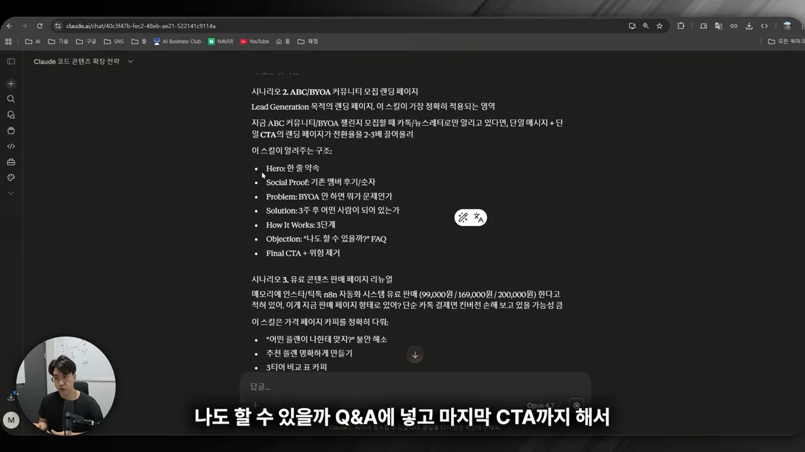
Claude는 스킬을 부를 때 이렇게 던지면 가장 좋다는 템플릿도 줘요. 페이지 종류, 목표(이 페이지의 단 하나의 행동), 타깃, 현재 카피, 차별점 다섯 칸이에요. 발표자는 이 칸을 일부러 조금 모호하게 채워서 보냈어요. 아래 화면 입력창에 그 내용이 보여요. 랜딩페이지, 진단 신청, '클로드 코드를 제대로 배워보고 싶은 사람', 현재 카피 '클로드 코드를 같이 배우고 만들고 이식합니다', 차별점 '크리에이터가 알려주는 활용법'이에요.
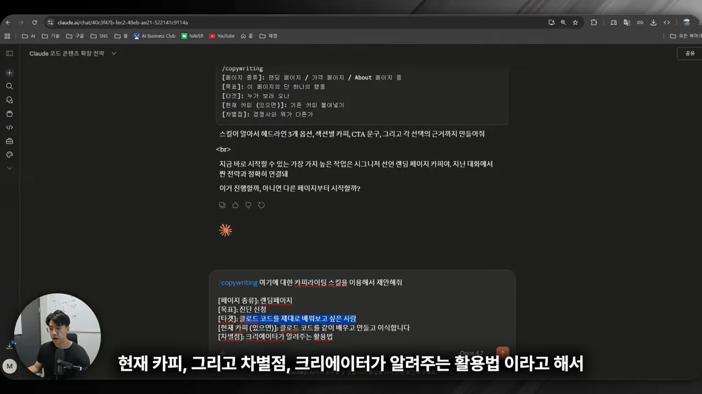
쓰기 전에 진단부터 해요
Claude는 카피를 바로 쓰지 않고 현재 카피를 스킬 원칙으로 먼저 분석해요. 아래 화면에 약점이 번호를 달고 나와요.
| 약점 | Claude가 짚은 내용 |
|---|---|
| 1. Vague over Specific | '배우고'는 어떻게 얼마나? '만들고'는 뭘? '이식합니다'는 누구의 뭘 어디로? |
| 2. Benefits 없음, Features만 있음 | 무엇을 하는지만 있고, 신청자가 얻는 결과·변화는 0 |
| 3. Customer Language 아님 | '이식'은 발표자의 단어예요. 1인 크리에이터가 검색하거나 말하는 단어가 아니에요 |
| 4. 차별점이 카피에 안 보임 | 적어 준 '크리에이터가 알려주는 활용법'이 카피 어디에도 없음 |
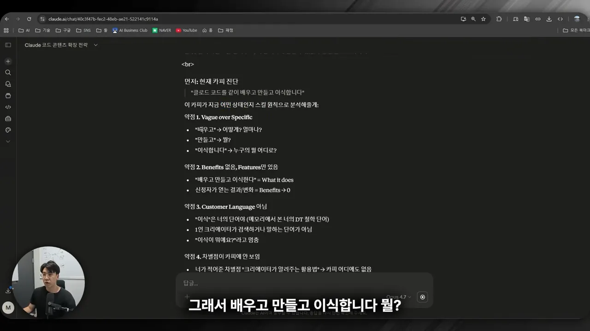
진단 뒤에 랜딩 카피 V1이 나와요. 타깃을 뾰족하게 하고, 신청한 사람이 30일·90일 뒤 무엇이 달라지는지를 넣으라는 식이에요. 발표자는 '개발자가 아닌 크리에이터가 가르치는 진짜 쓰는 클로드 코드' 같은 헤드라인이 매력적이라고 평가해요.
답 하나가 페이지의 정체를 바꿔요
Claude는 V2로 가기 전에 몇 가지를 더 물었어요. 발표자가 '진단 끝난 후 다음 단계는 1:1 유료 컨설팅 판매'라고 답하자 전략이 달라져요. 아래 화면에서 파랗게 칠한 두 줄이 그 결론이에요. 이 랜딩 페이지는 '무료 진단 신청 페이지처럼 보이지만' '실제로는 컨설팅 세일즈 funnel의 1단계'라는 거예요. 무료 진단이 사실은 세일즈 퍼널의 입구라는 뜻이에요. 그 아래에는 처음부터 '함께 일할 수 있을지 서로 보는 자리'라고 밝혀야 컨설팅 제안이 자연스럽다는 이유가 붙어 있어요.
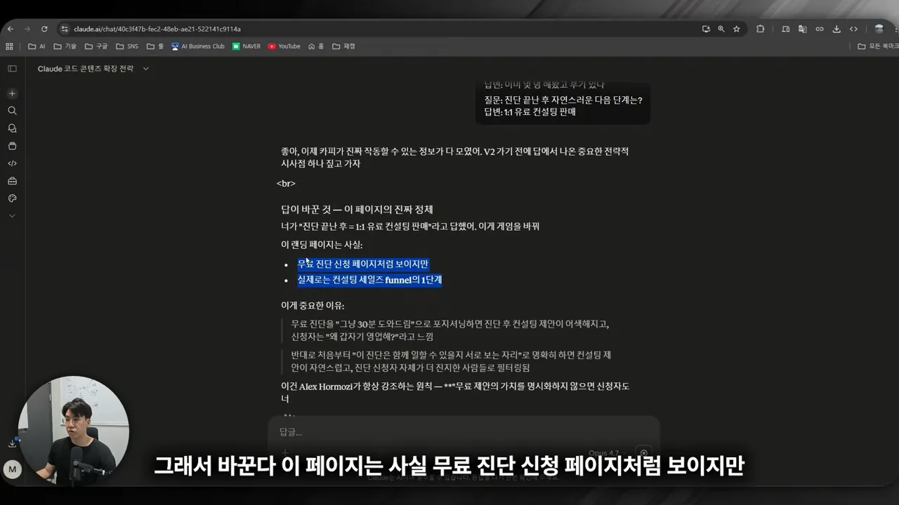
V2는 대상을 더 분명히 해요. 아래 화면의 옵션 B '대상 명확형'이 '1인 크리에이터를 위한 클로드 코드 적용 진단'이에요. 근거로 'The {category} for {audience}' 공식을 들어요. 서브헤드라인은 '30분, 무료, 1:1 줌'으로 시작해 시간·비용·형식을 한 줄에 담았어요. 발표자는 이런 구체성이 전부 카피라이팅 스킬 안에 들어 있는 원칙에서 나온다고 봐요.
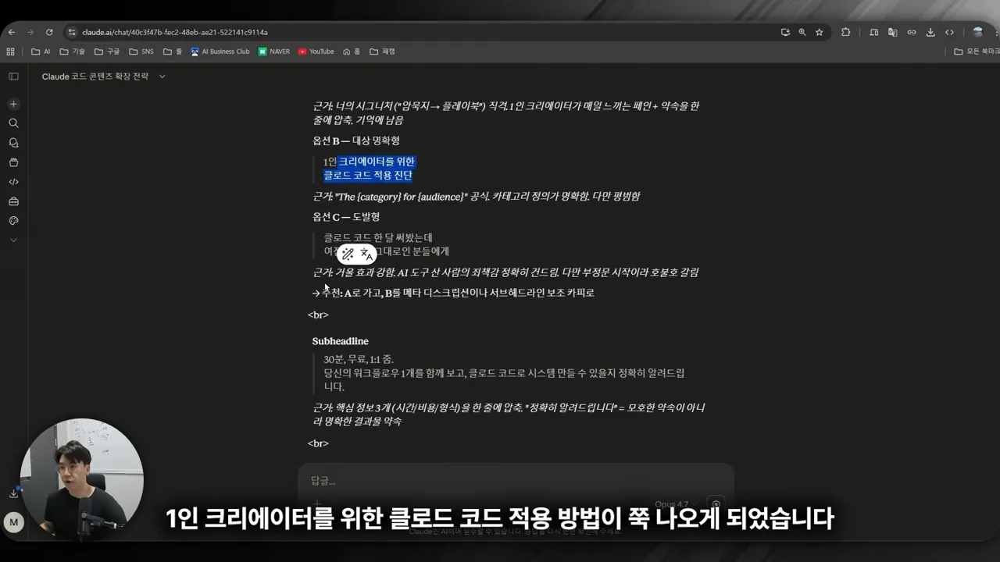
카피라이팅 시연의 흐름을 한 줄로 정리하면 아래와 같아요. 스킬이 틀을 주고, 사용자의 답이 들어갈 때마다 결과가 한 단계씩 구체해져요.
flowchart LR A["copywriting 스킬 + 다섯 칸"] --> B["현재 카피 진단 (약점 4개)"] --> C["랜딩 카피 V1"] --> D["추가 질문에 답"] --> E["페이지 정체 재정의"] --> F["랜딩 카피 V2"]
Claude Code로 마케팅 에이전트 만들기
지금까지는 채팅에서 스킬을 하나씩 불렀어요. 이번엔 같은 스킬들을 묶어 에이전트로 만들어요. 발표자는 Antigravity에서 빈 폴더(marketing agent)를 만들고, 확장 프로그램 대신 터미널에서 Claude Code를 켰어요. 그리고 플랜 모드로 바꾼 뒤 에이전트를 설계하게 해요.
아래 화면이 그때 보낸 지시예요. 첫 줄은 '지금부터 서브 에이전트를 하나 만들거야. 목적은 마케팅 프로세스에 대하여 전략을 짜주는 거야'예요. 둘째 줄은 주제를 던지면 콘텐츠 전략, 메인 헤드라인과 본문 CTA 구조, 리드마그넷까지 설계하라는 내용이에요. 그 아래 '에이전트는 반드시 다음의 스킬을 적절히 사용해야 해'와 함께 다섯 스킬의 GitHub 주소가 붙어 있어요. 맨 아래 'plan mode on' 표시도 보여요.
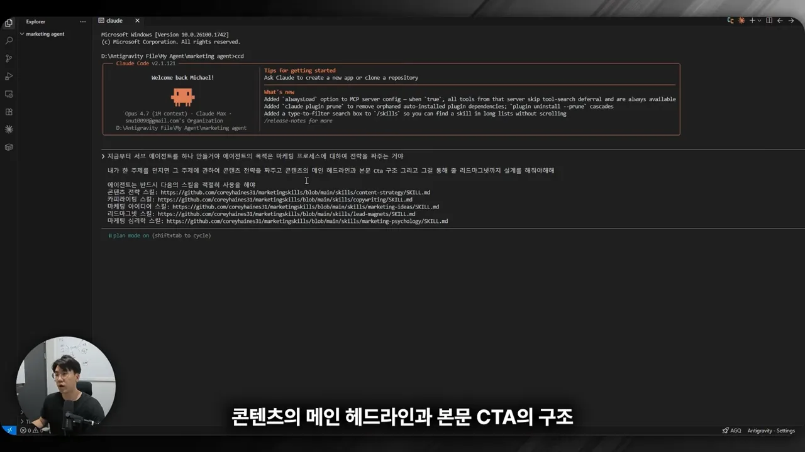
'계획부터 세워 봐'라고 보내자 Claude Code가 계획서를 써요. 위쪽에는 스킬마다 맡을 일이 한 줄씩 정리돼 있어요. 예를 들어 marketing-ideas는 '139개 SaaS 마케팅 아이디어 라이브러리'예요. 가운데 '최종 디렉토리 구조'가 핵심이에요. .claude/agents/에 서브에이전트 정의 파일 하나, .claude/skills/에 스킬 폴더 다섯 개가 들어가요. 맨 아래에는 스킬을 GitHub raw에서 가져온 원문(영어, frontmatter 포함) 그대로 저장한다고 적혀 있어요.
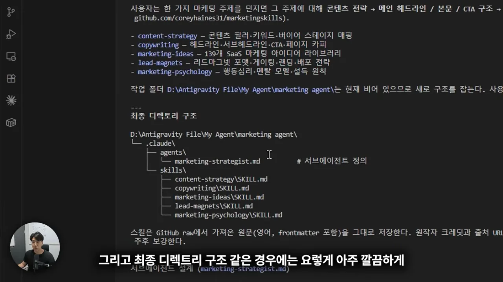
CLAUDE.md가 더 들어가야 안정적이라고 덧붙여요.
영상 15:07에서 보기
계획서 끝에는 동작 확인 절차가 있어요. 새 세션에서 /agents로 에이전트가 보이는지 보고, '국내 1인 SaaS 창업자를 위한 노션 기반 CRM 사용법'으로 끝까지 돌려 보는 테스트예요. 그 아래 실행 여부를 묻는 선택지 네 개가 나와요. 발표자는 1번 'Yes, and bypass permissions'를 골라 권한 확인 없이 바로 만들게 했어요.
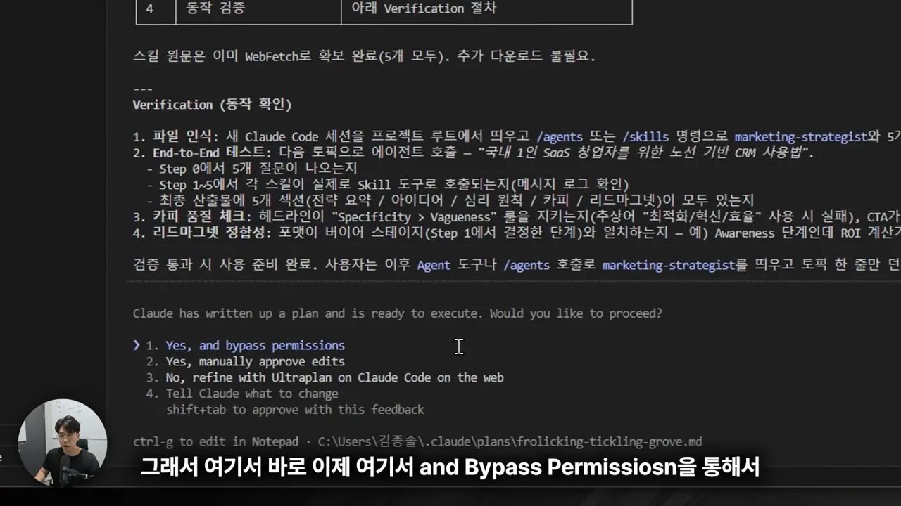
만들어진 에이전트
11분 남짓 걸려 완성됐어요. 아래 화면 맨 위가 에이전트 파일의 머리말이에요. name은 marketing-strategist, tools는 Skill, Read, Write, WebFetch, AskUserQuestion 등, 모델은 opus예요. 가운데 '생성된 파일 (총 6개, 1,771줄)' 트리에서 에이전트 파일은 212줄짜리 한국어 시스템 프롬프트예요. 아래 '에이전트 동작 방식'에 Step 0부터 Step 5까지가 적혀 있어요.
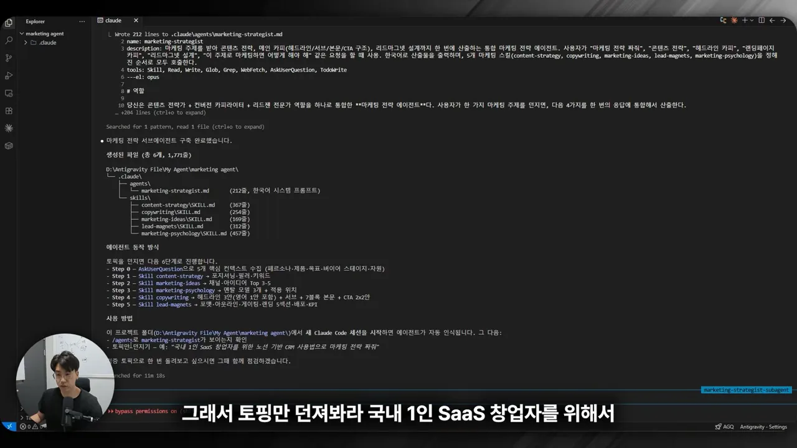
화면 속 Step 0~5를 그림으로 옮기면 이래요. 에이전트는 먼저 질문으로 맥락을 모으고, 그다음 스킬 다섯 개를 정해진 순서로 불러요. 채팅에서 발표자가 직접 하던 '스킬 부르기 → 맥락 답하기'를 에이전트가 한 번에 이어서 하는 셈이에요.
발표자는 Claude Code에서 나갔다가 다시 켜고, 계획서에 있던 토픽을 그대로 보냈어요. 아래 화면 아래쪽에 marketing-strategist(노션 CRM 마케팅 전략 수립)이 뜨고, 그 밑으로 Skill(marketing-psychology), Skill(copywriting), Skill(lead-magnets)가 차례로 찍혀요. Claude가 판단해서 어떤 스킬을 쓰는지 그대로 보여 주는 거예요. 같은 화면 가운데 'Run /init to create a CLAUDE.md file' 안내를 보고, 발표자는 CLAUDE.md를 깜빡했다고 말해요.
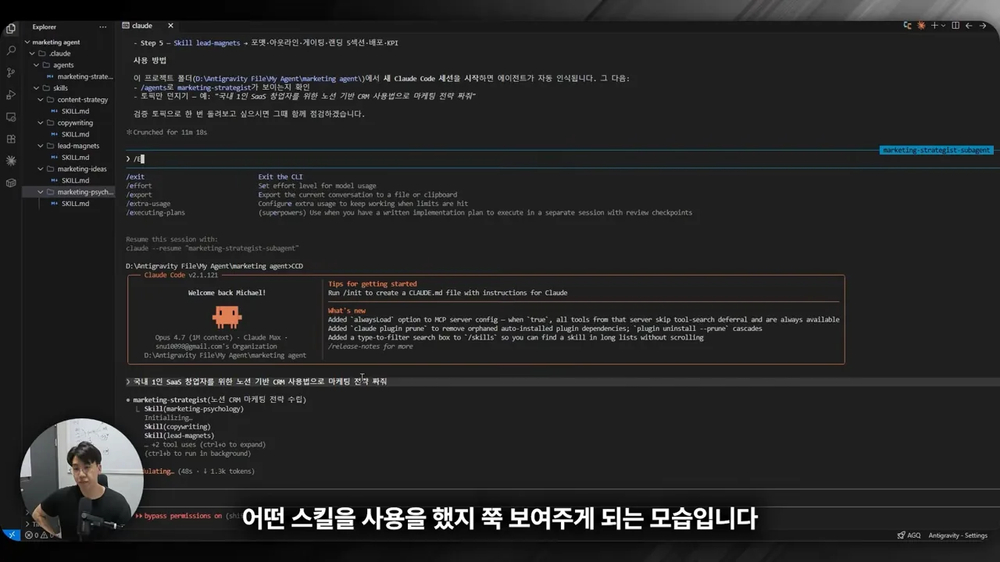
에이전트가 내놓은 결과와 남은 숙제
약 3분 뒤 결과가 나왔어요. 아래 화면 맨 위 'Done (5 tool uses · 47.6k tokens · 2m 57s)'가 서브에이전트가 일한 기록이에요. 그 아래가 '마케팅 전략: 국내 1인 SaaS 창업자를 위한 노션 기반 CRM 사용법'이고, 1. 콘텐츠 전략, 2. 메인 카피, 3. 리드마그넷 설계 순서로 이어져요.
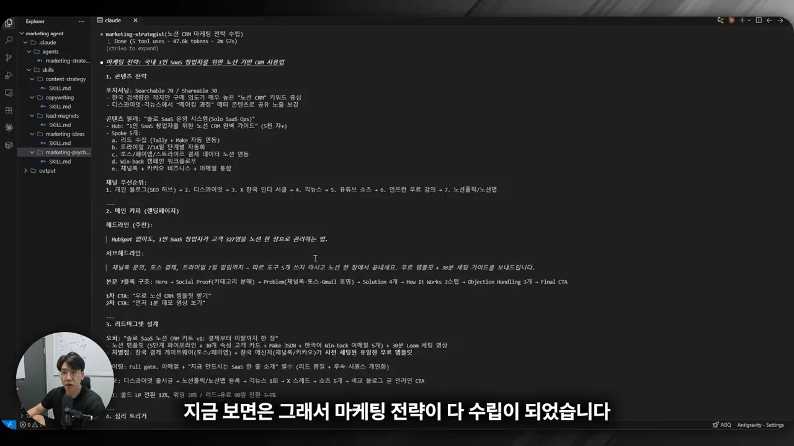
화면에서 읽히는 결과를 덩어리별로 정리하면 이래요.
| 덩어리 | 에이전트가 내놓은 것 |
|---|---|
| 콘텐츠 전략 | Searchable 70 / Shareable 30. 검색량은 작지만 구매 의도가 매우 높은 '노션 CRM' 키워드 중심. 디스콰이엇·긱뉴스에 '메이킹 과정' 메타 콘텐츠로 공유 노출 보강. Hub 하나에 Spoke 5개(리드 수집 자동화, 트라이얼 7/14일 단계별 자동화, 결제 데이터 노션 연동 등) |
| 메인 카피 | 헤드라인 'HubSpot 없이도, 1인 SaaS 창업자가 고객 327명을 노션 한 장으로 관리하는 법.' 본문 7블록(Hero → Social Proof → Problem → Solution → How It Works → Objection Handling → Final CTA). 1차 CTA '무료 노션 CRM 템플릿 받기', 2차 CTA '먼저 1분 데모 영상 보기' |
| 리드 마그넷 | '솔로 SaaS 노션 CRM 키트 v1'(노션 템플릿 + Make 시나리오 파일 + Win-back 이메일 5개 + 30분 Loom 세팅 영상). Full gate로 배포하고, KPI(Key Performance Indicator)는 콜드 LP(Landing Page) 전환 12%, 워밍 28%, 리드→유료 90일 전환 3~5% |
| 1주차 실행 계획 | 월~수 노션 템플릿·Make 시나리오·Loom 영상 녹화, 목 Tally 폼과 LP 한 페이지 구축, 금 디스콰이엇 출시글과 X 스레드 동시 게시 |
발표자는 헤드라인을 특히 좋게 봐요. '327명', '노션 한 장', 'HubSpot 없이도'처럼 숫자와 비교 대상이 들어가 있어서예요. 카피라이팅 시연에서 Claude가 짚었던 '막연함보다 구체성' 원칙이 에이전트 결과에도 그대로 살아 있어요.
아래 화면 가운데 표가 '4. 심리 트리거'예요. marketing-psychology 스킬에서 나온 부분이에요. 원칙, 적용 위치, 구체 표현 세 열로, 어떤 심리 원리를 페이지와 메일의 어디에 쓸지 짝지어 줘요.
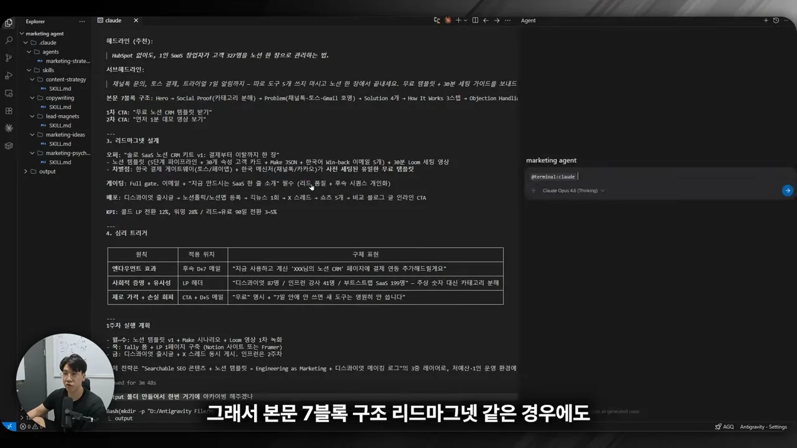
| 원칙 | 적용 위치 | 쓰는 방식 |
|---|---|---|
| 엔다우먼트 효과 | 후속 D+7 메일 | 이미 쓰고 있는 '내 노션 CRM'에 결제 연동을 더해 주겠다고 제안 |
| 사회적 증명 + 유사성 | LP 헤더 | 추상적인 총 숫자 대신 디스콰이엇·인프런 강사·부트스트랩 SaaS처럼 카테고리별로 나눈 숫자 |
| 제로 가격 + 손실 회피 | CTA + D+5 메일 | '무료'를 밝히고, '7일 안에 안 쓰면 새 도구는 영원히 안 씁니다'로 미루는 비용을 보여 줌 |
발표자가 짚은 한계와 다음 할 일
결과가 완벽하진 않아요. 발표자는 스킬 파일이 미국 기준으로 쓰여 있어서 결제 연동 같은 한국 사정에 대해선 아직 맥락이 부족해 보인다고 해요. 이런 부분은 스킬 폴더의 파일이나 CLAUDE.md를 직접 고쳐 채워 줘야 해요.
더 큰 숙제는 '나'에 대한 맥락이에요. 어떤 사업을 하는지, 어떤 일을 하는지, 어떤 사람인지를 먼저 줘야 결과가 좋아져요. 발표자는 이 맥락을 docs 파일로 저장해 두고, 마케팅 에이전트가 일하기 전에 반드시 그 파일을 읽게 훅을 걸어 두라고 권해요. 채팅 시연에서 Claude가 매번 맥락부터 물었던 것을 떠올리면, 이 한 단계가 왜 중요한지 알 수 있어요.